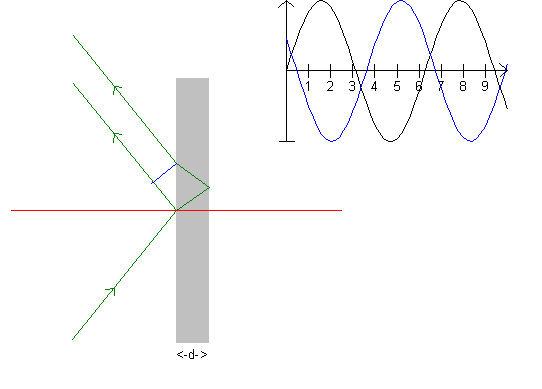
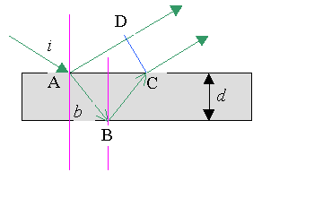
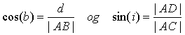
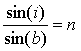
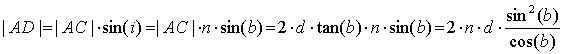
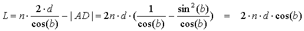
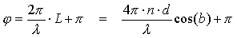

Først mindes om følgende forsøg, som er beskrevet i enhver fysikbog om optik: En plan bølge, f.eks. en vandbølge bevæger sig mod en mole med et lille hul. På den anden side af molen breder bølger sig ud idet hullet udsender en ringbølge. Er der ikke ét men to huller i molen, ses to ringbølger og de interfererer. Hvor bølgetop møder bølgetop, ses en forhøjet bølgetop, (analogt med bølgedal), men hvor bølgetop møder bølgedal, udslukker de to bølger hinanden. Vi siger, at bølgerne interfererer henholdsvis konstruktivt og destruktivt.
I den tynde film opstår interferensen mellem strålen reflekteret fra filmens overflade og strålen reflekteret fra filmens underside. Grafen øverst viser om de reflekterede stråler er i fase eller modfase ved det blå liniestykke på tværs af de reflekterede stråler. I tabellen herunder kan man se, at faseforskellen er 1,15. Det er næsten modfase, idet ulige tal: 1, 3, .. svarer til modfase og lige tal: 0, 2, 4,.. svarer til samme fase.
Igen varieres parametre vha. scrollbarer i panelet til venstre. Værdierne aflæses i tabellen og øvelse og forklaring står at læse i memoen.
Interferens |
|
| Brydningsindeks, n | 1,334 |
| Bølgelængde/nm, grøn | 546,1 |
| Indfaldsvinkel i/° | 51 |
| Brydningsvinkel b/° | 35,6 |
| Faseforskel/pi | 1,150 |
| Tykkelse d/ nm | 1000 |
Den tynde film kan være en oliehinde på en vandoverflade eller en sommerfuglevinge. Simulationen har ikke noget med regnbuen at gøre, men alligevel, se senere Youngs interferens.
Varier i og d, så du opnår destruktiv interferens.
Varier i og d og bølgelængden, så du opnår konstruktiv interferens.
Kan der være konstruktiv interferens for d mindre end bølgelængden?
Antag, at hvidt lys sendes ind mod filmen ved en vinkel på 30°. Hvilke(n) farve ses i det reflekterede lys, når d = 1000 nm?
Hvor i naturen forekommer sådanne interferenser?
Lav en udskrift og skriv forklaring til.

Den optiske vejforskel er ifølge ovenstående figur:
L = n·|AB| + n·|BC| - |AD|,
hvor afstandene i filmen er ganget med brydningsindekset, fordi bølgelængden i stoffet l' = l/n.
Vi benytter nu, at

Det sidste udtryk fordi vinkel DCA = indfaldsvinklen i.
Ved hjælp af
brydningsloven 

Da |AB| = |BC| fås følgende udtryk for den optiske vejforskel:

Ved interferens må man være opmærksom på, at der kan ske faseskift ved refleksion. Ved refleksion fra en tynd film i luft ved små indfaldsvinkler, får den vinkelret polariserede komposant et faseskift på p ved refleksion fra forsiden af filmen og et faseskift på 0 ved refleksion fra bagsiden. For den parallelt polariserede komposant er faseskiftene omvendt. For begge komposanter ændres fasen altså med p.
Den samlede faseforskel for strålen, som reflekteres fra overfladen og strålen som reflekteres fra bagsiden er følgelig:
